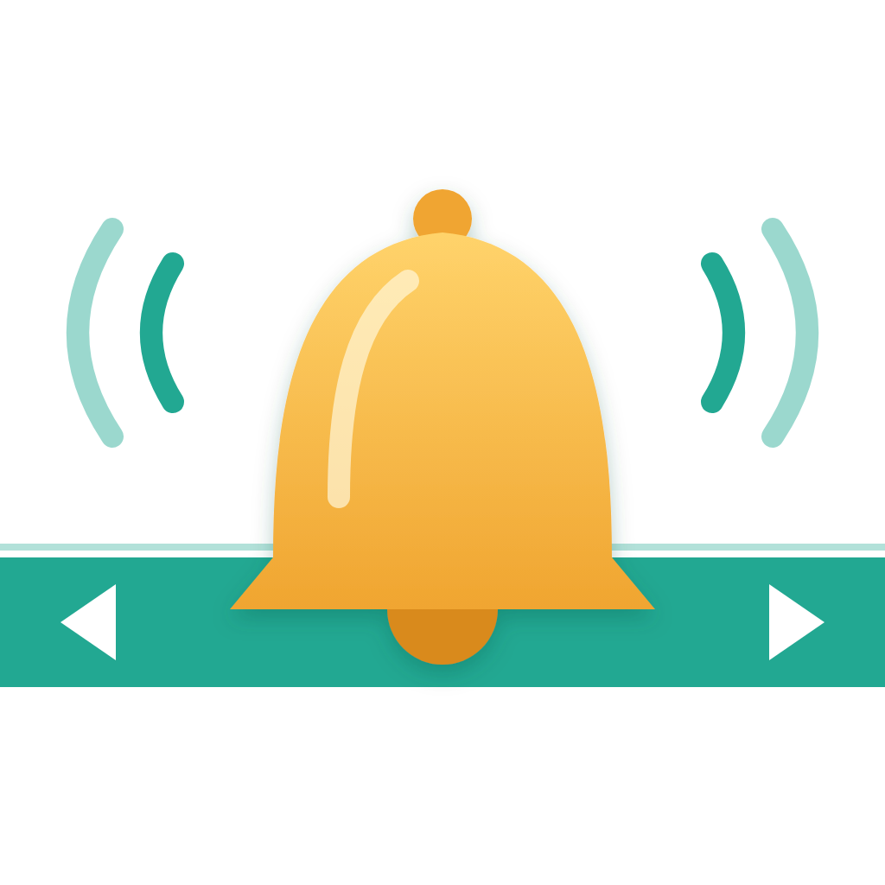
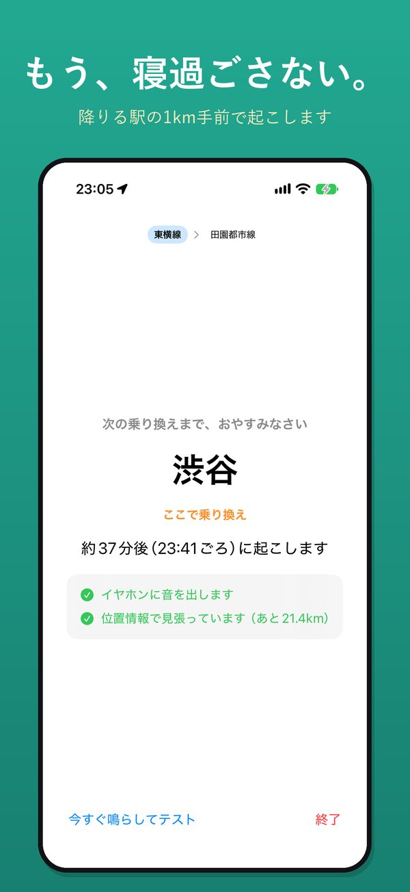
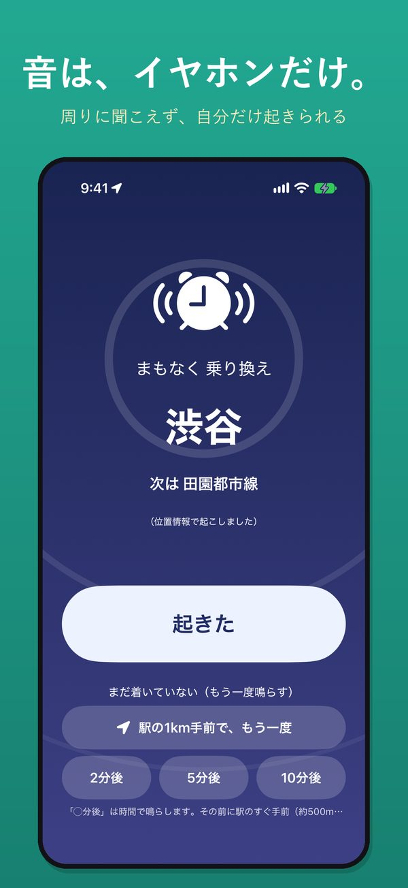
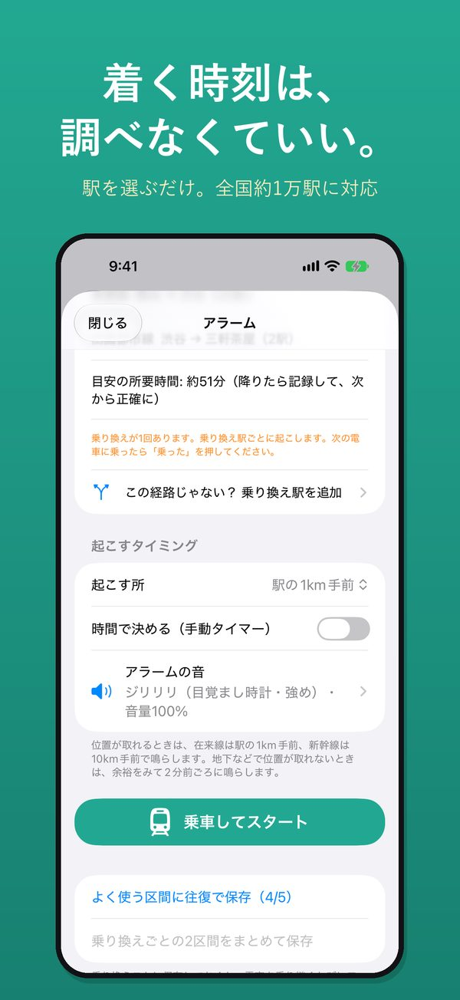
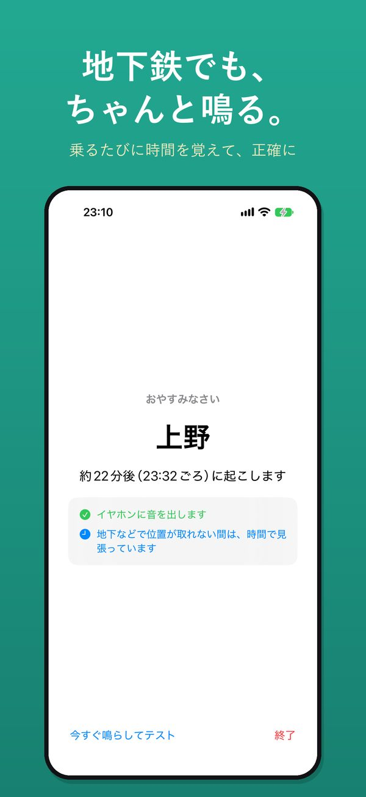
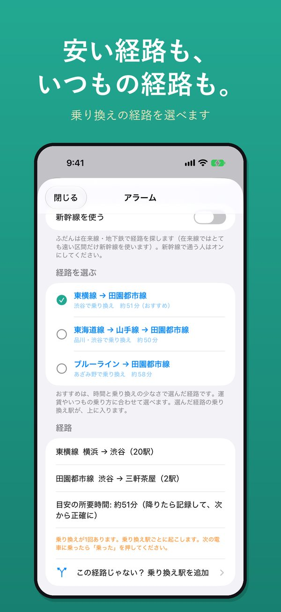
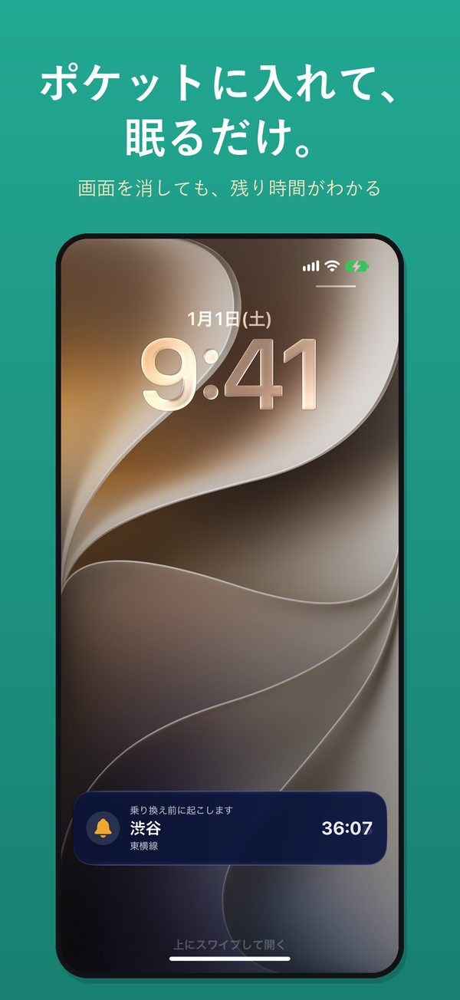
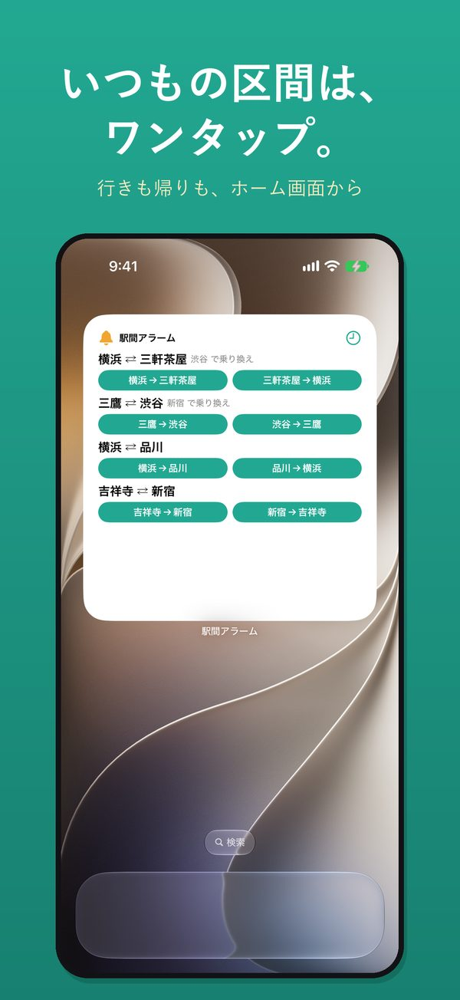
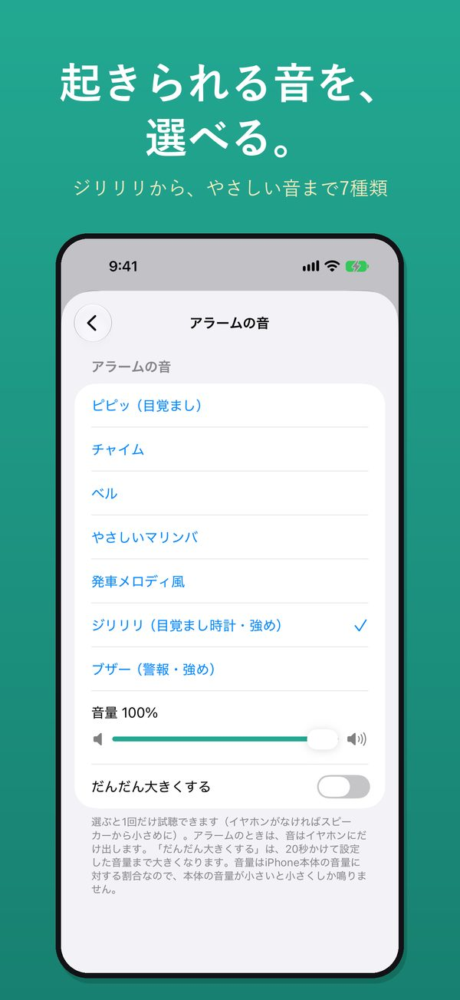

ホーム ＞ 駅間アラーム

もう、寝過ごさない。
降りる駅を選んで、ポケットに入れるだけ。駅の手前で、イヤホンにだけアラームを鳴らして起こします。着く時刻を調べる必要はありません。
- 全国 約1万駅
- 地下鉄でも鳴る
- 広告なし
- 位置情報は iPhone の中だけ

こんな人に
駅間アラーム は、こんな場面で役に立ちます。
- 朝の通勤・通学ついうとうとしても、降りる駅の手前で起こします。
- 残業や飲み会帰りの終電寝過ごせない夜に。音はイヤホンにだけ出ます。
- 初めて行く駅・遠くの駅着く時刻を調べなくても、駅を選ぶだけ。
- 乗り換えのある移動乗り換える駅の手前でも起こします。
できること
音は、イヤホンにだけ
周りの人に聞こえず、自分だけ起きられます。イヤホンをしていないときや、途中で外れたときは、音を止めて振動だけで知らせます。
起こすのは、在来線なら駅の1km手前。新幹線は荷物を下ろす時間をみて、10km手前です。

着く時刻は、調べなくていい
乗る駅と降りる駅を選んで「乗車してスタート」を押すだけ。時刻表で着く時刻を調べて、アラームを合わせる必要はありません。ホームで押しても、電車が動き出してから数え始めます。

地下鉄でも、ちゃんと鳴る
位置情報で駅への近づき具合を見ながら、届かない地下やトンネルでは、駅の間の距離から計算した時間で鳴らします。「降りた」を押すと実際にかかった時間を覚えて、次からもっと正確になります。

安い経路も、いつもの経路も
いちばん早い経路だけでなく、別の路線を通る経路も候補に出します。運賃やいつもの乗り方に合わせて選べます。乗り換える駅を自分で指定することもできます。

ポケットに入れて、眠るだけ
乗車中は、ロック画面とダイナミックアイランドに、降りる駅と残り時間を表示します。画面を消しても、あとどれくらいかが分かります。

通勤・通学は、ワンタップで
よく使う区間を5つまで登録できます。行き・帰りのどちらにも、ワンタップ。ホーム画面のウィジェットから、すぐに開けます。
音は、やさしい音から目覚まし時計のジリリリまで7種類。音量と「だんだん大きくする」も設定できます。

動画
画面

料金
プライバシー
位置情報は iPhone の中だけで使い、外部へは送りません。広告もありません。
- 駅へ向かうバスや車の中で押すと、その動きに反応して早めに数え始めることがあります。電車に乗ってから（またはホームで）押してください。
- 所要時間は時刻表ではなく目安です。大事な予定の日は、ほかの方法と組み合わせてお使いください。
- 対応
- iPhone
- 配信
- 日本
- カテゴリ
- ナビゲーション
- 駅のデータ
- 国土数値情報（鉄道データ）（国土交通省）をもとに MORK STUDIO 作成
よくある質問・サポート
駅間アラームは、どんなアプリですか？
電車で寝過ごさないための iPhone アプリです。降りる駅を選んでポケットに入れておくと、駅の手前でイヤホンにだけアラームを鳴らして起こします。全国の約1万駅（JR・私鉄・地下鉄・新幹線）に対応しています。
着く時刻を調べて、アラームを合わせる必要はありますか？
ありません。乗る駅と降りる駅を選んで「乗車してスタート」を押すだけです。在来線は駅の1km手前、新幹線は荷物を下ろす時間をみて10km手前で起こします。
料金はかかりますか？
10回まで無料で使えます。気に入ったら、一度の購入で回数無制限になります。買い切りで、サブスクではありません。広告もありません。
位置情報は、どこかに送られますか？
送りません。位置情報は iPhone の中だけで使います。
イヤホンをしていないと、どうなりますか？
周りの人に聞こえないよう、音は出さずに振動だけで知らせます。鳴っている途中でイヤホンが外れたときも、すぐに音を止めて振動だけにします。
地下鉄やトンネルでも使えますか？
位置情報が届かない間は、駅の間の距離から計算した時間で鳴らします。一度「降りた」を押すと実際にかかった時間を覚えるので、次からはもっと正確になります。
音が小さい・聞こえません。
アラームの音量は iPhone 本体の音量に対する割合です。本体の音量を上げてから、設定の「アラームの音」で音量を調整してください。
購入を復元するには？
設定画面の「購入」欄にある「購入を復元する」を押してください。
対応している路線は？
国土数値情報（鉄道データ）にもとづき、日本全国の JR・私鉄・地下鉄・新幹線の駅に対応しています。所要時間は時刻表ではなく目安です。
不具合やご要望は、こちらへお送りください。お使いの端末と iOS のバージョンを書いていただけると助かります。
MORK STUDIO：morkstudio@icloud.com
駅間アラーム
電車で眠ってしまっても、降りる駅の手前でイヤホンにだけアラームを鳴らして起こすiPhoneアプリ。地下鉄でも鳴る。全国約1万駅に対応。乗り換え・経路選び・ウィジェットにも対応。